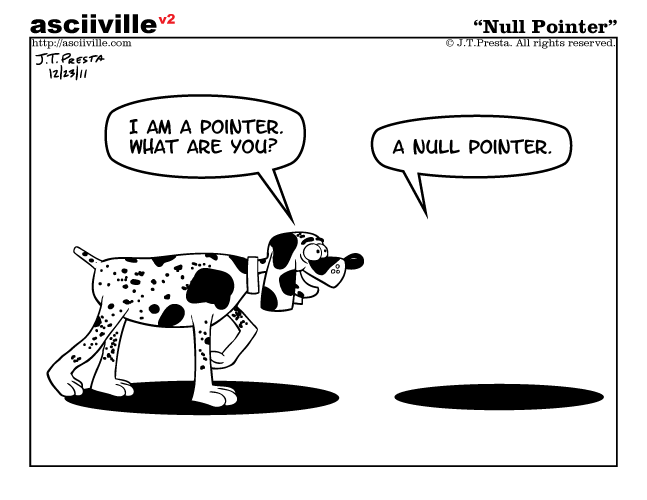

9 Homogeneous Types
If you have experiences in programming languages such as C/C++, Java, you are probably wondering why we have not said anything about primitive types such as int, float, and boolean yet? And how are we going to introduce data structures, such as vectors, without defining scalar types first?
- First of all, as you might have noticed, R is dynamically-typed (see Typing systems), which is why we are able to use R as a calculator without specifying the types of the values we give to R in our code.
- More importantly, and dramatically, as we will show in this session, all primitive types in R are vectors. This is a design choice that makes R different from many other programming languages, and has profound implications on how we write code in R.
Recommended readings:
- Chapter 3, Vectors, Advanced R, Hadley
- R Internals
- R Language Definition
- Chapter 9, Functionals, Advanced R, Hadley
9.1 Overview
- Atomic vectors are the primitive types in R
- Data of different types may be coerced into another type
- Attributes add context to atomic vectors
- Matrices are atomic vectors with
dimattribute - Class is attribute of atomic vectors
- All values in vectors are of the same type
- Lists are collections of vectors of varying type and length

9.2 Atomic vectors
The most basic data type in R is the atomic vector, also referred to as the basic vector or simply as vector. Atomic vector is the primary data type of R. This is different from other programming languages such as C and Java who has scalar types. (See SEXP if you want to dig deeper under the hood of R.)
There are no 0-dimensional types in R. Individual numbers or strings, which appear to be scalars, are vectors of length one.
See Scalar and vectors if you are not sure of these terms.
9.3 c function
Function c combines values to form a new (atomic) vector.
[1] 11 12 13 10 1 2 3Have you noticed the
[1]which is always at the beginning of the output? Have you asked yourself what it is for? This next example will give you the answer.
Let’s practice using the for loop
When only one element is given to c, the resulting value is the same as if a scalar value is given:
When no inputs are given, c() returns NULL (see [Examples of missing values]).
The length of the vector can be obtained and set by the length function:
9.4 Base types
As the primary data structure of R, an atomic vector is an ordered collection of values of the same kind (as opposed to [Lists]). There are 4 commonly used atomic vector types in R:
- double, the default type R use to store (real) numeric values.
10,3.6,2.67e5 - integer, whole numbers.
10L, 2.67e5L, from:to - character, texts
"abc", "column_a" - logical,
TRUE,FALSE
9.4.1 double
?double- R has no single precision data type. All real numbers are stored in double precision format.
Numeric literals can be written in decimal, scientific, or hexadecimal formats:
Decimal format
Scientific notation format
x <- 7.82e5 # scientific notation
x
x <- 7.82e-10
x # printed in scientific notation
options(scipen = 999) # switch off printing in scientific notation
x # see how all the zeros are now printed, how many zeros do you see behind the decimal point?
options(scipen = 0) # reset scipen to default
x # printed in scientific notation againHexadecimal format
9.4.2 integer
?integer- integer (vectors) exist so that data can be passed to C or Fortran code which expects them, and so that small integer data can be represented exactly and compactly. Note that current implementations of R use 32-bit integers for integer vectors , so the range of representable integers is restricted to about +/-2*10^9 (2 billion)
For more on the limitation of integers in R: R in a 64 bit world
9.4.3 character
A character vector is for storing text-based values. Each element of the vector is a string of characters.
- Concatenate, sub-string, substitution
9.4.4 logical
9.4.5 Other types
Other less commonly used data types also exist in R:
- complex, complex numbers in the form “a+bi”,
3+8i - raw, raw bytes
9.5 Type test
To get a logical value to indicate whether the value is of the desired type, we call on the following functions:
9.6 Coercion
- Implicit coercion (type promotion)
- Explicit coercion
9.6.1 Implicit coercion
Recall that all elements of a vector must share the same type. What happens when you put different types in the same c function?
We can see that values from the more strict type is always coerced to the less strict type. For instance, when TRUE and 100L are combined, the logical TRUE is coerced to the integer value of 1L. This is because the integer type in this instance is able to present TRUE in its entirety, whereas the opposite is not possible. Following the same logic, we can rank the four atomic types as illustrated:

Values of lower ranked type is coerced to the higher ranked type to preserve its value. This behaviour is similar to the implicit type casting in other languages such as C.
Implicit coercion also happens in arithmetic operations
9.6.2 Explicit coercion
Sometimes, we want to explicitly change the type of a vector from one type to another:
double and integer are referred to as numeric types in R.
9.7 Built-in constants
R has a few built-in constants:
The names of these constants are not reserved words (see ?reserved) in R. The user can overwrite their values.
9.8 Inf and NaN
Both Inf and NaN are of type double, both are reserved words (see ?reserved) in R.
- Non-measurable vs Not-measured
- “You know it, I know it, everyone knows it.” -
Inf,NaN - “I don’t know”
NA- (going crazy face), “I don’t know why I don’t know.”NULL- (calm face), “I know that I don’t know.”
9.9 NA and NULL
In R, NA and NULL are the two keywords that are used in relation to the null problem (See null in computers).
- Both
NAandNULLare used to represent nothing ( missing or undefined values). NAis the logical constant representing the indeterminate logic state.
See documentation:
?NA- “Not Available” / Missing Values, NA is a logical constant of length 1 which contains a missing value indicator. NA can be coerced to any other vector type except raw. There are also constants NA_integer_, NA_real_, NA_complex_ and NA_character_ of the other atomic vector types which support missing values: all of these are reserved words in the R language.
?NULL- The Null Object, NULL represents the null object in R: it is a reserved word. NULL is often returned by expressions and functions whose value is undefined.
Testing for NA and NULL:
9.9.1 Missing values
With NA:
[1] NA [1] 1 2 3 NA NA NA NA NA NA NA NA NA NA NA NA NA NA NA NA NA NA NA NA NA NA
[26] NA NA NA NA NA NA NA NA NA NA NA NA NA NA NA NA NA NA NA NA NA NA NA NA NA
[51] NA NA NA NA NA NA NA NA NA NA NA NA NA NA NA NA NA NA NA NA NA NA NA NA NA
[76] NA NA NA NA NA NA NA NA NA NA NA NA NA NA NA NA NA NA NA NA NA NA NA NA NAWith NULL
NULL represents - undefined values, declare a name that’s yet to be defined
NULL can be useful as a placeholder:
9.9.2 Indeterminate state
NA represents logical indeterminacy, a third state that is neither TRUE nor FALSE
Operations on NA does not necessarily produce NA:
9.10 Attributes
9.10.1 Context matters
Atomic vectors are linear 1-dimensional data structures. As the primitive types of the language, atomic vectors are designed to hold units of data of different type. However, data by itself doesn’t tell the full story. Take this definition of a numeric vector as an example:
What does the values in d represent? The number of students in three classes? The age of three patients in a clinic? The number of flu cases in three clinics?
The description of data (meta data) gives meaning to the data, it transforms data to information. The same piece of data can be interpreted completely differently given different meta descriptions (i.e. context).
Context matters, just as in human language:

9.10.2 Add attributes
In R, attributes may be added to the data structure to provide the context. More complex data structures such as matrices are defined by adding attributes to atomic vectors.
We start by adding arbitrary attributes with attr:
num [1:3] 10 22 35
- attr(*, "city")= chr "oxford"
- attr(*, "country")= chr "uk"
- attr(*, "data")= chr "flu cases"[1] "oxford"To retrieve all attributes of an object:
In R, two attributes are commonly used to structure vectors.
- names - a character vector naming each element of the data vector.
- dim - an integer vector specifying the size of each dimension
9.10.3 Names
You can name each of the data element with the names attribute:
Because names is a special attribute that R understands, there are a few quicker ways to set it:
Once the data elements are named, you can retrieve elements using the name assigned to it.
Names can be removed by unname or set names as NULL
9.10.4 Dimensions (Matrix)
Matrices are vectors with dim attributes
Same as names, there are quicker ways to construct matrices:
As you can see, the default ordering in R is column-major:

The byrow argument let you populate rows first:
What happens if you supply fewer elements than the matrix’s capacity?
What about now?
What happens if you supply more elements than the matrix’s capacity?
What about now?
- Don’t ignore warnings!
- Don’t rely on warnings!

There are a few functions related to matrix operations (these also work with data frames).
d <- matrix(c(1, 2, 3, 4, 5, 6), nrow = 2, ncol = 3)
t(d) # transpose
diag(d) # diagonal
d * d # element-wise multiplication (inner product)
d %*% t(d) # matrix multiplication
outer(1:10, 1:4) # outer product of two vectors
1:10 %o% 1:4
nrow(d) # get the number of rows
ncol(d) # get the number of columns
rownames(d) <- c("a", "b") # set row names
colnames(d) <- c("c1", "c2", "c2") # set column names, duplicates allowed
d
d[, "c2"] # only the first match is returned when dubplicates exist
rownames(d) # get row names
colnames(d) # get column names
d
d1 <- rbind(d, c(11, 12, 13)) # add a row
d2 <- cbind(d, c(21, 22)) # add a column
rownames(d1)
colnames(d2)
is.matrix(d) # if the object is a matrix
d3 <- c(1, 2, 3)
attr(d3, "dim") <- c(3)
is.matrix(d3)
attr(d3, "dim") <- c(1, 3)
is.matrix(d3)Outer product of two vectors \(v_1\otimes v_2\) is very useful to vectorise functions that require two inputs:
Structures with higher dimensions are referred to as array ()
9.10.5 Class
From an implementation point of view, class is simply another attribute that can be added to vectors:
What makes the class attribute different from other attributes, is that a set of behaviours are associated with certain built-in classes that R recognises. This is similar to when setting the dim attribute to a vector:
We give introduction to two built-in classes
factor- for categorical dataDate- for date data
9.10.5.1 Factor
A factor is a vector of data that takes a small number of distinct values (i.e. categorical data).
As you can see, the underlying atomic type is integer, and it has levels attribute in addition to the class attribute. You can manually construct a vector of factors too:
gl(n, k, length = n*k, labels = seq_len(n)) generate n factors (levels) each is repeated k times.
A useful function that works well with factors is table which gives a summary of a vector of categorical values:
cut divides the range of x into intervals. Each interval is designated with a level.
9.10.5.2 Date
d <- Sys.Date()
typeof(d)
attributes(d)
as.numeric(d) # the numeric value represents the number of days since 1970-Jan-01 (Unix Epoch)
d <- as.Date("2021-01-12")
str(d)
d + 30
d <- as.Date("2021-01-12", format = "%Y-%d-%m")
d + 30
d1 <- as.Date("2020-02-25", format = "%Y-%m-%d")
d2 <- as.Date("2020-03-25", format = "%Y-%m-%d")
l <- d2 - d1
l
typeof(l)
attributes(l)Date format code
| Code | Value |
|---|---|
| %d | Day of the month (decimal numeric) |
| %m | Month (decimal numeric) |
| %b | Month (abbreviated) |
| %B | Month (full name) |
| %y | Year (2 digits) |
| %Y | Year (4 digits) |
9.11 Vector arithmetic
When we introduced operators earlier in the module, we were
- Using numbers as if they were scalars
- Looping over values as if they were separate entities
Having learnt new things about R from this session, knowing that data structures of R are built on vectors, what do you think is the implication of this design?
Now you know that 1 is actually a vector of length 1 the first and only element of which is the value 1, what does the expression 1 + 2 mean? Yes, you added two vectors (both of length 1) together. Therefore, all the operators in R operate assume input as vectors and gives vectors as outputs:
And our Bmi function works with vectors too.
Meaning that when you have a list of inputs, you don’t need a for loop calling Bmi iteratively to get a list of outputs.
Note the difference between the longer and shorter forms of & and |
##ß Vectorize
- Some functions do not account for vector input.
Vectorizecreates a function wrapper that vectorizes the action of its argument function.
9.12 Functional programming
Functions are first class objects in R:
- Functions are printed just like a variable is
- Functions can be passed on to another function like a variable:
9.12.1 The apply family
apply- Like its name suggests,applyapplies a given function over a data structure, more specifically according to?apply: it applies functions over array margins.

lapplyloops the top level dimension and returns a listsapplysimplifies the returned list fromlapplyif all elements in that list is of the same length
mapplyis a multivariate version ofsapply.mapplyapplies the function to the first elements of each argument, the second elements, the third elements, and so on. Arguments are recycled if necessary.
Outer product of two vectors \(v_1\otimes v_2\) is very useful to vectorise functions that require two inputs:
9.13 Arithmetic precision
double and integer are referred to as numeric types in R.
Many experienced R users are able to write perfectly functioning R codes without knowing that there are two numeric types in R. R’s dynamic typing system (see Typing systems), and use of implicit conversion (see Coercion) make this possible. But knowing the difference between the two types and their implementation will help you diagnose your code when it is not working as intended. Take a look at the following example:
Recall when we introduced relational operators (==, !=,…), we emphasized that only use these operators for integer values. What if we convert the doubles to integers?
As stated in Why doesn’t R think these numbers are equal?, R FAQ :
The only numbers that can be represented exactly in R’s numeric type are integers and fractions whose denominator is a power of 2.
?all.equal- The functionall.equal()compares two objects using a numeric tolerance of.Machine$double.eps ^ 0.5. If you want much greater accuracy than this you will need to consider error propagation carefully.
The short answer to this question is precision. More precisely, the precision of the representation of fractions is limited in a computer.
You can also use this website Decimal to binary converter IEEE 754 to see the binary representation of double typed values.
For the long answer, see 0.300…004.
Exercises
See Section 15.1 for more exercises on usages of vectors.
9.14 Further Topics
Evaluating the Design of the R Language, Objects and Functions For Data Analysis
9.14.1 Scalar and vectors
(More details on this topic will be provided in the “Mathematics for Modellers” module taking place in week 2.)
We illustrate the difference between scalars and vectors with this simple example in a 2-dimensional space:

{kind=link}
In the x-y space (2-dimensional) illustrated above, when considered independently, x and y are two scalar values. When combined, (x, y) defines the direction of the vector v in respect to the origin (where the two axis intersect).
And of course, you can imagine in a 3-dimensional space (an x-y-z space), a vector is defined as v = (x, y, z). The list of values inside the parentheses gets longer as the number of dimensions of the space gets higher.
In some programming languages, vectors are referred to as arrays.
Did you know that mosquitos are referred to as vectors in infectious disease modelling?
9.14.2 Statement terminator
The code snippet below has three lines of code.
If we add ; at the end of each statement, we can write all three statements in one line of code:
In programming languages, a syntax like ; is referred to as a statement terminator (or delimiter). As the name suggests, it indicates the end of a statement. In languages such as C and Java, ; is the only statement terminator, thus the use of ; is mandatory. In R (and Python, Javascript, Matlab …), additional to semicolons, a new line may indicate the end of a statement, therefore ; can be omitted in most cases.
3.2 Control structures, R Language Definition: Both semicolons and new lines can be used to separate statements. A semicolon always indicates the end of a statement while a new line may indicate the end of a statement. If the current statement is not syntactically complete new lines are simply ignored by the evaluator. If the session is interactive the prompt changes from ‘>’ to ‘+’.
The difference between a new line and a semicolon is that it only “may” be the end of a statement. This is why we can split a long statement into multiple lines without getting an error:
This is good, but if you are used to program in a language in which a semicolon is mandatory, you need to be aware that a statement may end before you think it does:

9.14.3 null in computers
Computer programs have the tendency to frame everything in binary forms: the power is either on or off, a key on the keyboard is either pressed or not, a website is either online or offline. With a sequence of binary switches, all real numbers can be represented by their corresponding binary form. Surely, there is nothing left to cover, right?
Hold on, what about nothing ? What represents nothing?
Programming languages often refer to this nothing-ness using the word “null”. Unix systems have the dev/null device for dumping outputs, SQL uses NULL to indicate values missing from a database, a null pointer indicates that the target is not a valid object in languages such as C++.

In the case of null pointer, its definition requires the guarantee that a null pointer does not compare equal to any pointer that point to a valid object. This is an example of the next layer of issue caused by this nothing-ness:
Mixing null value with other values often produces ambiguous results. This state is indeterminate, neither TRUE or FALSE. See Three-valued logic
In summary, to understand the use of NA and NULL, it is important to note the distinction between the two null-related issues computer programs have to deal with:
- Missing or undefined values
- Indeterminate logic state
9.14.4 Typing systems
SO: What is the difference between statically typed and dynamically typed languages?
Note that in dynamically typed languages, values have types, not variables.
9.14.5 SEXP
R is primarily written in C, Fortran, and R itself. (R source code) The R software environment is a GNU package, and is freely available under the GNU General Public License. It is necessary to know something about how R objects are handled in C code. All the R objects you will deal with will be handled with the type SEXP, which is a pointer to a structure with typedef SEXREC.
Symbolic-expression (SEXP) record (REC) structure, is a C structure underlying every R object, accessible via a pointer of type SEXP.
SEXPis common in LISP-like language syntaxes it is a way to represent a nested list of data. For example, the simple mathematical expression “five times the sum of seven and three” can be written as a s-expression with prefix notation. In Lisp, the s-expression might look like(* 5 (+ 7 3)).
SEXPREC is a variant type that can handle all the usual types of R objects, that is vectors of various modes, function, environments, language objects, etc.
The four atomic vector types correspond to four SEXP types:
INTSXP: integer vectorsREALSXP: double vectorsCPLXSXP: complex vectorsSTRSXP: character vectors
NULL is defined with SEXPTYPE #0 NILSXP
To learn more on this topic:
9.14.6 0.300…004
So you want to know more about this:
What is a floating point number and how is it different from an integer?
- Floating point numbers
- Decimal to IEEE 754 Floating Point Representation
- IEEE 754 Standard for Floating Point Binary Arithmetic
- Decimal to binary converter IEEE 754
Precision issue with floating point numbers:
- Is floating point math broken?
- Floating point math
- What Every Computer Scientist Should Know About Floating-Point Arithmetic
- R in a 64 bit world
The only numbers that can be represented exactly in R’s numeric type are integers and fractions whose denominator is a power of 2. :
- Why doesn’t R think these numbers are equal?, R FAQ
- Appendix G “Computational Precision and Floating Point Arithmetic”, pages 753–771 of Statistical Analysis and Data Display: An Intermediate Course with Examples in R, Richard M. Heiberger and Burt Holland (Springer 2015, second edition)
Relax … everything is working as intended :)